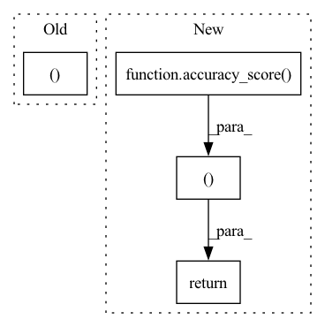

Pattern ID :20651
Before Change
// validation metrics
preds = torch.argmax(logits, dim=1)
preds, y = preds.cpu(), y.cpu()
acc = accuracy_score(preds, y)
self.log("val_loss", loss, on_step=False, on_epoch=True, logger=True, prog_bar=True)
self.log("val_acc", acc, on_step=False, on_epoch=True, logger=True, prog_bar=True)
After Change
// validation metrics
preds = torch.argmax(logits, dim=1)
acc = accuracy_score( preds.cpu(), y.cpu())
self.log("val_loss", loss, on_step=False, on_epoch=True, logger=True, prog_bar=True)
self.log("val_acc", acc, on_step=False, on_epoch=True, logger=True, prog_bar=True)
return loss, acc, preds, y
// logic for a single testing step
def test_step(self, batch, batch_idx):
x, y = batchIn pattern: SUPERPATTERN
Frequency: 3
Non-data size: 4
Instances Fragment ID: 66507296
Project Name: ashleve/lightning-hydra-template
Commit Name: 0030c94b17bdd837b536a177ae3b0725d2c3e74d
Time: 2021-01-09
Author: zalewski.ukas@gmail.com
File Name: project/pytorch_modules/lightning_models/simple_mnist_classifier.py
M Class Name: LitModel
N Class Name: LitModel
M Method Name: validation_step(3)
N Method Name: validation_step(3)
M Parent Class: pl.LightningModule
N Parent Class: pl.LightningModule
M File Name: project/pytorch_modules/lightning_models/simple_mnist_classifier.py
N File Name: project/pytorch_modules/lightning_models/simple_mnist_classifier.py
M Start Line: 57
M End Line: 64
N Start Line: 54
N End Line: 62
Before Change
// training metrics
preds = torch.argmax(logits, dim=1)
preds, y = preds.cpu(), y.cpu()
acc = accuracy_score(preds, y)
self.log("train_loss", loss, on_step=False, on_epoch=True, logger=True, prog_bar=True)
self.log("train_acc", acc, on_step=False, on_epoch=True, logger=True, prog_bar=True)
After Change
// training metrics
preds = torch.argmax(logits, dim=1)
acc = accuracy_score( preds.cpu(), y.cpu())
self.log("train_loss", loss, on_step=False, on_epoch=True, logger=True, prog_bar=True)
self.log("train_acc", acc, on_step=False, on_epoch=True, logger=True, prog_bar=True)
// we can return here anything and then read it in some callback
return loss, acc, preds, y
// logic for a single validation step
def validation_step(self, batch, batch_idx):
x, y = batch Fragment ID: 66507295
Project Name: ashleve/lightning-hydra-template
Commit Name: 0030c94b17bdd837b536a177ae3b0725d2c3e74d
Time: 2021-01-09
Author: zalewski.ukas@gmail.com
File Name: project/pytorch_modules/lightning_models/simple_mnist_classifier.py
M Class Name: LitModel
N Class Name: LitModel
M Method Name: training_step(3)
N Method Name: training_step(3)
M Parent Class: pl.LightningModule
N Parent Class: pl.LightningModule
M File Name: project/pytorch_modules/lightning_models/simple_mnist_classifier.py
N File Name: project/pytorch_modules/lightning_models/simple_mnist_classifier.py
M Start Line: 39
M End Line: 48
N Start Line: 39
N End Line: 48
Before Change
correct += (results == batch["label"]).sum()
tot += outputs.shape[0]
return correct, tot After Change
guesses.extend(results.numpy())
correct.extend(batch["label"].numpy())
accuracy = accuracy_score( correct, guesses)
scores = precision_recall_fscore_support(correct, guesses)
return accuracy, scores Fragment ID: 66507291
Project Name: tiagomantunes/karen
Commit Name: 82e5d2b5eaf27dac3fba554b0f25691f7f82c812
Time: 2021-06-01
Author: tiago.melo.antunes@gmail.com
File Name: framework/training.py
M Class Name: AnonimousClass
N Class Name: AnonimousClass
M Method Name: eval(3)
N Method Name: eval(3)
M Parent Class:
N Parent Class:
M File Name: framework/training.py
N File Name: framework/training.py
M Start Line: 101
M End Line: 115
N Start Line: 107
N End Line: 123